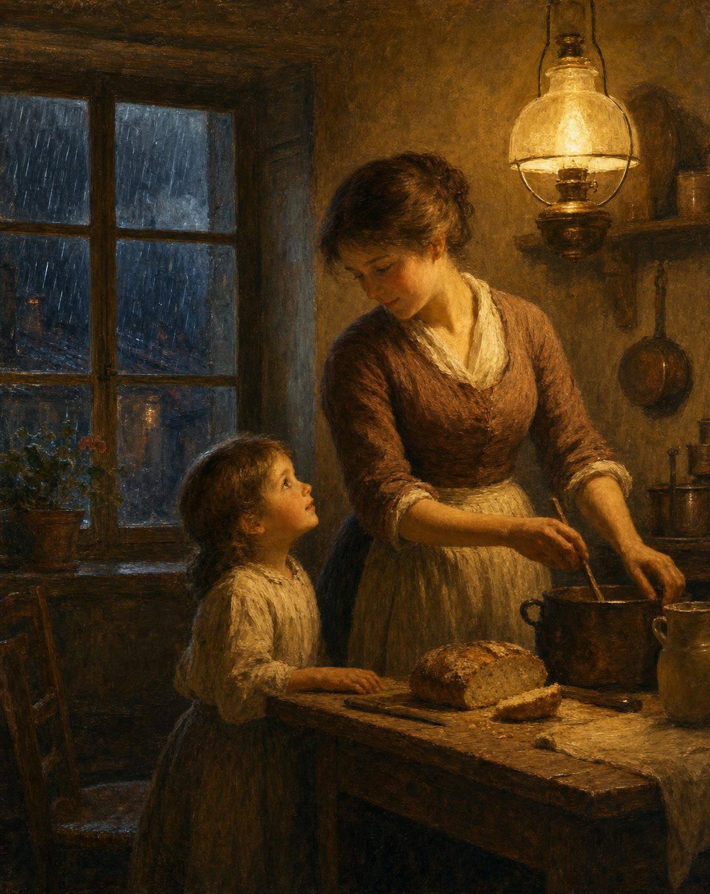

Mama I'm hungry
Continuous presence and the cost of absence
Pedagogy · 13 min read

By Jacobus van Merksteijn
There is a sentence most people have heard tens of thousands of times and never truly understood. Not as a request for food. But as the beginning of the self.
"Mum, I'm hungry."
A two-year-old says that. The child doesn't actually know what hunger is. It feels something in its body — a discomfort, an emptiness, an urge it cannot name. When its mother responds to that signal with food, and with the words "you're hungry," something in the child learns what that bodily discomfort is. Not through the cortex. Not through a definition. Through the repeated connection between a sensation and the response of one particular human being.
That connection is not coincidental. It is the architecture of the self.
What is really being built in the first years
We think we are giving children knowledge in the first years. That is wrong. What is built in the first years of a child's life is not knowledge but self-recognition. The child comes to know its tiredness because one person consistently responds to the corresponding behaviour with rest and sleep. It comes to know its pain because that one person consistently acknowledges and soothes it. It comes to know its excitement, its fear, its sadness, its joy — because it is consistently mirrored in all of these by the same presence.
A baby is not an empty vessel that needs to be filled. A baby is a system of sensations that does not yet know itself — that does not know what it feels, does not know what those feelings are called, does not know what to do with them. The system comes to know itself through the feedback of one consistently present other.
A baby is a system of sensations that does not yet know itself — that does not know what it feels, does not know what those feelings are called, does not know what to do with them.
In the terminology of the 7-dimensional feeling model: the child builds its N-position in the first years. Not as abstract self-definition — that comes later. But as the most fundamental layer of the sense of self: I am this body, these sensations are mine, this is what I feel and it has a name. That layer is the foundation of everything that follows. And it is built through one thing: the consistent feedback of one particular person.
Why it cannot be outsourced
This process cannot be outsourced to rotating caregivers. Not in principle — in any moral sense — but structurally. Not because rotating caregivers are bad people. But because rotating translations interrupt the construction of self-recognition.
A daycare centre with five carers translates the child's crying in five different ways. What one calls "you're tired" gets labelled "you're restless" by another. With the third it's "you're hungry." With the fourth, "you need attention." With the fifth it is ignored because there are twenty other children who also want something.
The child growing up in this situation is forced to build a verbal overlay designed to predict the varying reactions, instead of a limbic self-knowledge that grows from consistent recognition. The child learns not to treat its signals as reliable information, because the information they yield changes from person to person. It learns not to trust its primal feeling, because the primal feeling delivers sensations that no one consistently translates.
The child growing up in this situation is forced to build a verbal overlay designed to predict the varying reactions, instead of a limbic self-knowledge that grows from consistent recognition.
Continuity is everything. Not the quality of the individual interaction — a rotating carer can give ten minutes of exceptional attention — but the repeatability of the connection. "Mum, I'm hungry" only works as a learning moment when mum does the same thing a hundred times. The hundredth time is when the child knows. Not from the first time.
Looking honestly at the question of presence
I want to be honest here, not diplomatic. Our current society has normalised the dual-income household in a way that has direct consequences for this foundation. The second income is in most Western societies no longer a luxury but a necessity — or it is experienced as one. Housing costs, cost of living, social expectations: all have been ratcheted up to the point where one income is no longer sufficient for most families.
This is not an indictment of working parents. It is a description of a structural situation that carries a real cost — not a cultural or moral cost, but a developmental-psychological one. The question is not whether working is good or bad. The question is: what does it cost the child, and do we dare say it?
It costs the child the first building block of its inner life. The self-recognition built — or not built — in the first three years largely determines how a person navigates their emotional life later. A child who has not learned to recognise its hunger, its tiredness, its pain, its fear through consistent feedback does not know later who it is when those questions grow larger and more complex. It feels, but does not recognise what it feels. It does not know what it feels. Burn-out, anxiety disorders, depression, loneliness — they do not all start here, but for many, the disconnection from their own inner world begins here.
A child who has not learned to recognise its hunger, its tiredness, its pain, its fear through consistent feedback does not know later who it is when those questions grow larger and more complex.
Honesty also requires me to say: this problem cannot be solved through parents alone. It demands social arrangements that do not currently exist — economic possibilities for a single income that suffices, social recognition of the caregiving presence as fully valid work, forms of community in which the burden of early upbringing is more broadly shared. That is work that falls outside this article, but it is work that must be done.
I am not asking for guilt from working parents. I am asking for honesty about what is at stake, so that the choice can be made consciously rather than being driven by the assumption that things will turn out fine.
The horizontal field: neighbourhood children, animals, nature
The continuous presence of one parent is the first condition. The second is equally fundamental and of an entirely different nature.
If the vertical parent-child relationship were the only one, an unbalanced intensity would develop in that single line. What is missing, and only the horizontal field can provide, is the child's experience among peers: other children, with whom it is not constantly being translated, for whom it must find its own place, where no adult runs the show.
In the horizontal field the child learns something no parent can teach it. It learns to determine its N-position in relation to beings who occupy roughly the same position. It learns the rhythm of a collective that no one has planned. It learns what resistance is — another child who wants something different, an animal that doesn't do what was expected, a branch that doesn't hold where it was counted on. Those resistances are pedagogically irreplaceable. They teach the child where it ends and where the world begins — a distinction that is hard to learn in the vertical parent-child relationship, because the parent almost always adapts sufficiently to soften the resistance.
The role of animals in this horizontal field is systematically underestimated in virtually all modern pedagogical approaches. An animal — a dog, a cat, a horse, a sheep, a chicken — is a being with its own primal feeling but without the cortex-overlay that most people have laid over their direct perception. It feels without language. It responds without explanation. It accepts or refuses without shame or social-strategic thinking.
In contact with animals, the child learns something about its own primal feeling that it cannot learn from people: that the primal feeling is not linguistic, that it exists independently of language, that it is something the child shares with other forms of consciousness that have no cortex. A child who is around a dog daily discovers directly how communication without words works — because the dog responds not to the words but to the tone, the posture, the state of mind. It cannot be deceived. That is one of the most valuable lessons a child can learn: that there is a layer of communication that goes deeper than language.
Nature is the third component, and it is not a backdrop. Nature teaches the child the rhythm of slow change — the unfurling of a leaf, the growth of a plant over weeks, the return of the birds in spring. That knowledge cannot be found in a book and cannot be acquired in a classroom. It can only be acquired by being there, day after day, season after season.
In nature, the child also stands in a field where it is not the central figure. An experience that places its N-position in resonance with something larger than itself from the start. That is the first lesson in humility — not the humility of the head, which can be learned and rehearsed, but the humility of the body that senses how small it is in a world that continues without its input.
What it costs to not pay
Our culture has known for tens of thousands of generations the combination of a strong vertical relationship — one primary caregiver, consistently present in the earliest years — and daily access to the horizontal field of other children, animals, and nature. That is not the cultural invention of any particular period. It is the evolutionary baseline of human upbringing, as it occurred in hunter-gatherer communities, early agricultural societies, and farming villages.
What we have built in a few generations as an alternative: daycare from six weeks old, screens as babysitters, cities without outdoor space, arranged play-dates in place of unorganised outdoor play, animals in households already too busy to take them seriously.
The outcomes of this experiment are broadly visible. Attachment problems on a massive scale. Loneliness epidemics. Anxiety disorders in eight-year-olds. Depression as the most common psychological complaint in the Western world, starting to affect teenagers.
These are not side effects of a successful experiment. These are the symptoms of an experiment that has failed.
The cost of not paying is concrete. A child who has not learned to know its own emotional life during the years when that foundation is laid does not, later, have the tools to recognise burn-out before falling into it, does not have the tools to understand its relationships when they break down, does not have the tools to know its own direction when the world asks what it wants to become.
"Mum, I'm hungry" is a sentence from a two-year-old. But whoever has learned to understand it properly — whoever has learned to recognise the sensation as information about themselves, who has learned that their body speaks reliably — that person is in a different position later in life. They have a compass.
And whoever has not learned to understand it — not because the mother was worse, but because the structure didn't allow it — that person spends their whole life searching for what they should have found at the beginning: a way of knowing who they are.
For further reading: the complete pedagogical elaboration of the earliest developmental phase, the role of the primary caregiver, the horizontal field, and the practical arrangements needed for all of this, is in the Manifest voor onderwijs en opvoeding. The theoretical underpinning — why consistent feedback builds the N-axis and what structurally goes wrong with rotating caregivers — is in the work Denkbasis voor een 7-dimensionaal gevoelsmodel. Both works are available for download on openvizier.org.
Mum, I'm Hungry
A two-year-old says it but doesn't yet know what hunger is. It feels a discomfort it cannot name. The mother responds with food and the words "you're hungry" — and something in the child learns what that sensation is.
"That connection is not coincidental. It is the architecture of the self."
What is really built in the first years
We think we are giving children knowledge. We are wrong. What is built in the first years is not knowledge but self-recognition. A baby is a system of sensations that does not yet know itself. It comes to know its tiredness, its pain, its fear because one consistently present other mirrors all of it back. In the terms of the model: the child builds its N-position, the most fundamental layer of the self.
Why it cannot be outsourced
Not for moral reasons — structurally. A daycare with five carers translates the child's crying five different ways: tired, restless, hungry, attention-seeking, or ignored. The child is forced to build a verbal overlay to predict the varying reactions, instead of a limbic self-knowledge grown from consistent recognition. It learns not to trust its own signals.
Continuity is everything — not the quality of a single interaction, but the repeatability of the connection. "Mum, I'm hungry" works as a learning moment only when mum does the same thing a hundred times. The hundredth time is when the child knows.
The honest question of presence
I want to be honest, not diplomatic. Society has normalised the dual-income household, and the second income is now experienced as a necessity. This is not an indictment of working parents. It is a description of a structural situation that carries a real cost — not moral, but developmental-psychological. The question is what it costs the child, and whether we dare say it.
It cannot be solved by parents alone. It demands arrangements that don't yet exist: a single income that suffices, recognition of caregiving as fully valid work, community that shares the burden. I ask not for guilt, but for honesty about what is at stake.
The horizontal field
The presence of one parent is the first condition. The second is the horizontal field: other children, animals, nature. Among peers the child learns resistance — another child who wants something different, a branch that doesn't hold — teaching where it ends and the world begins. An animal feels without language and cannot be deceived: a layer of communication deeper than words. Nature teaches the rhythm of slow change, and the humility of a body that senses how small it is.
Close
For tens of thousands of generations the baseline was a strong vertical relationship plus daily access to the horizontal field. In a few generations we built an alternative: daycare from six weeks, screens as babysitters, cities without outdoor space. Attachment problems, loneliness, anxiety in eight-year-olds. These are not side effects of a successful experiment. They are the symptoms of one that has failed.
"Whoever has learned to understand 'mum, I'm hungry' has a compass. Whoever has not spends a whole life searching for what they should have found at the beginning: a way of knowing who they are."